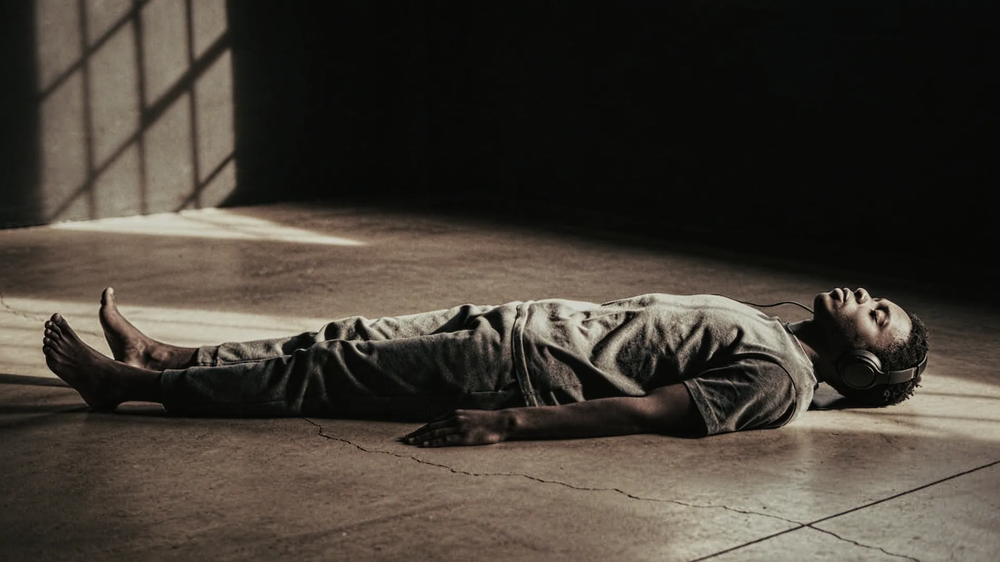
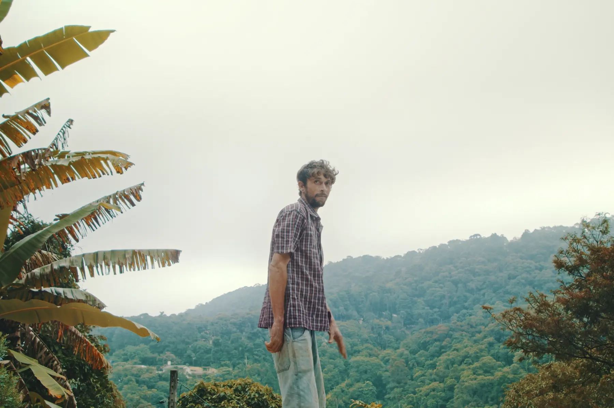
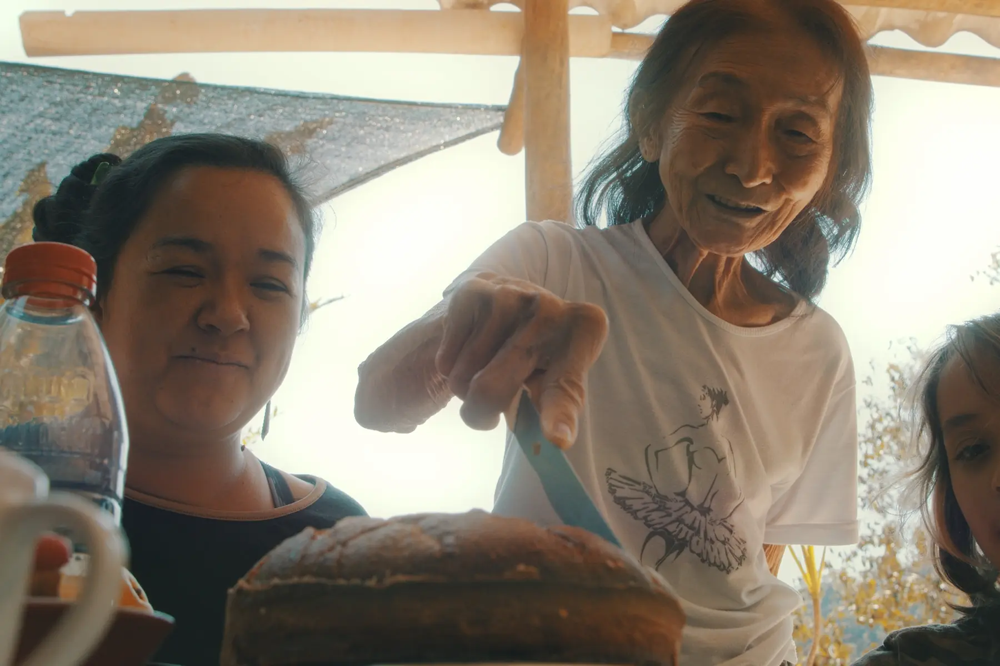

Art, direction and shared situations.Arte, direção e situações compartilhadas.
Works across film, listening, narrative environments and collaborative cultural processes.Trabalha entre cinema, escuta, ambientes narrativos e processos culturais colaborativos.
Felipe Rocha is a Brazilian artist and director whose practice moves through documentary attention, performance, education, collaboration and spatial thinking.Felipe Rocha é artista e diretor brasileiro cuja prática atravessa atenção documental, performance, educação, colaboração e pensamento espacial.
His works take the form of films, sound pieces, listening situations, cultural processes and archival structures.Seus trabalhos assumem a forma de filmes, peças sonoras, situações de escuta, processos culturais e estruturas de arquivo.


